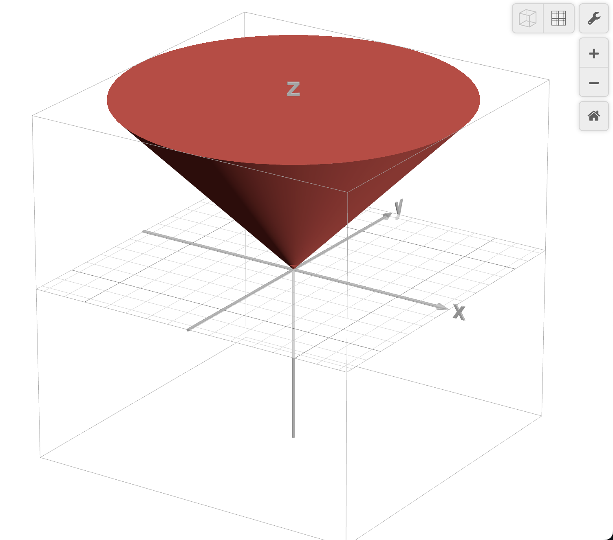

Convex Optimization
Definitions
Def. Convex Set
A set S\sub\R^n is convex if for all \bold{x,y}\in S,\lambda\in[0,1], the line connecting \bold{x,y} is also in S.
\lambda \bold x + (1-\lambda)\bold y \in S
Def. Convex Function
A function f:\R^n\to \R is convex iff the epigraph of f (region above f) is convex. Equivalently, for all \bold{x,y}\in\text{Domain}(f), \lambda\in[0,1],
f(\lambda\bold x + (1-\lambda)\bold y)\leqslant \lambda f(\bold{x}) + (1-\lambda)f(\bold{y})If -f is convex, then f is concave.
Remark.
A nice connection shows up of we consider the more general definition of a linear function. f:\R \to\R is linear if it satisfies:
f(\alpha x + \beta y) = \alpha f(x) + \beta f(y)
for constants \alpha, \beta and all x,y in f's domain.
Another definition of a convex function is:
f(\alpha x + \beta y) \leqslant \alpha f(x) + \beta f(y)
So we can see that linear optimization is just a special case of convex optimization.
Example. Convex Functions
Let the domain be (-\infty, \infty),
f(x) = e^x, f(x) = x^2 are convex
f(x) = \sqrt{x}, f(x) = x^3 are not convex
Prop. Local minima of convex f is the global minima.
No other minima exist
Convex Optimization
A convex optimization program looks like the following:
\begin{aligned}
\min\quad& f_0(\bold x)\\
\text{subject to }\quad & \left\{\begin{aligned}&
\left.\begin{aligned}
f_1(\bold x)&\leqslant 0\\
f_2(\bold x)&\leqslant 0\\
\qquad \vdots\\
f_m(\bold x)&\leqslant 0
\end{aligned}\right\}\text{Inequality Constraints}\\\\
&\left.\begin{aligned}
h_1(\bold x) &= 0\\
\qquad \vdots\\
h_p(\bold x) &= 0
\end{aligned}\right\}\text{Equality Constraints}
\end{aligned}
\right.
\end{aligned}where f_0\dots f_m: \R^m\to \R are convex, h_1\dots h_p: \R^m\to \R are linear.
Let X be the set of solutions / feasible region:
X = \{\bold{x}\in\R^m\mid \bold{x} \text{ satisfies all the constraints} \}Prop. Feasible region is convex
Remark.
Linear functions of the form \bold{a^\top x +b} are both convex and concave. LP is a special case of convex optimization
Example. Convex Region
In \R^2, consider the constraints f_1, f_2 \leqslant 0 where:
\begin{aligned}
f_1(\bold x) &= x_1^2 + x_2^2 - 1\\
f_2(\bold x) &= e^{x_1} - x_2 - 1
\end{aligned}
We can see that the overlapped region is convex.
Prop. Set of convex functions form a vector space
Let f be convex.
- Constant multiple: af is convex
- Addition: f + g is convex if g is also convex
Optimality Status
- Infeasible
- X=\varnothing, optimal value = \infty
- Unbounded
- |X| = \infty, optimal value = -\infty
- Optimal
- We either have a finite solution or the solution is infinite. For example \min e^{-x}, the optimal value is 0, but we need x\to \infty.
Second Order Cone Programming (SOCP)
A general cone program has the form:
\begin{aligned}
\min\quad &\bold c^\top \bold x\\
\text{subject to}\quad & \|A_i\bold x + \bold b_i\|_2\leqslant \bold c_i^\top \bold x + d_i\qquad 1\leqslant i\leqslant m
\end{aligned}where \|\cdot\|_2 is the l_2 norm.
A second order cone has the following form:
\{(\bold x,t)\in\R^2\times \R: \|\bold x\|_2 \leqslant t\}
Linear programming is a special case of SOCP.
\begin{matrix}
\begin{aligned}
\min \quad & \bold c^\top \bold x\\
\text{subject to}\quad &\begin{aligned}
A\bold x &= \bold b\\
\bold x &\geqslant 0
\end{aligned}
\end{aligned}
&\iff
&
\begin{aligned}
\min \quad & \bold c^\top \bold x\\
\text{subject to}\quad &\begin{aligned}
\|A\bold x - \bold b\|_2 &\leqslant \bold 0^\top \bold x + 0 = 0\\
\|0\bold x + \bold 0\|_2 &\leqslant x_i
\end{aligned}
\end{aligned}
\end{matrix}Semi-Definite Programming
Def. Semi-Definite Matrix
Matrix A is semi-definite if
- a_{ij}\geqslant 0
- A^\top = A
- \bold x^\top A\bold x\geqslant 0 for all \bold x with non-negative entries
This is equivalent to saying all eigenvalues of A is positive
Prop. The set of semi-definite matrices is convex
A semi-definite program has the following form:
\begin{aligned}
\min \quad&\bold c^\top \bold x\\
\text{subject to}\quad & \sum^n_{i=1}x_iA_i\geqslant B
\end{aligned}where A_i is a matrix, \bold x is a vector, x_i is the i-th entry of \bold x
Def. Cone
A set S\sub\R^n is a cone if \forall\bold x\in S, \lambda \geqslant 0\implies\lambda\bold x\in S.
Lagrangian Dual Method
Now we wish to know the dual form of convex programs. For the general primal problem (\text{P}):
(\text P)\qquad \begin{aligned}
\min\quad & f_0(\bold x)\\
\text{subject to}\quad & \left\{\begin{aligned}
f_i(\bold x)&\leqslant 0 &&\quad i = 1\dots m\\
h_j(\bold x) &= 0 &&\quad j = 1\dots p
\end{aligned}\right.
\end{aligned}We need a variable for each f_i and each h_j.
Def. Lagrangian
{\cal L}(\bold x, \boldsymbol\lambda, \boldsymbol\mu) = f_0(\bold x) + \sum^m_{i=1}\lambda_if_i(\bold x) + \sum^p_{j=1}\mu_j h_j(\bold x)To satisfy Thm. Weak Duality , we need {\cal L}(\bold x, \lambda, \mu)\leqslant f_0(\bold x).
If \bold x is a solution to the program, then we know from the original constraints:
\sum^p_{j=0}\mu_jh_j(\bold x) = 0\qquad \sum^m_{i=1}f_i(\bold x)\leqslant 0So there's no constraint on \mu_j, and we need \lambda_i\geqslant 0 for \sum^m_{i=1}\lambda_if_i(\bold x)\leqslant 0 to hold.
The Lagrangian is also bounded by the optimal value. For all feasible \bold x, {\cal L}(\bold{x},\lambda, \mu)\leqslant f_0(\bold{x}^*)
Def. Lagrangian Dual
Let g(\boldsymbol\lambda, \boldsymbol\mu) = \displaystyle\inf_{\bold x\in\R^n}{\cal L}(\bold x, \boldsymbol\lambda, \boldsymbol\mu) for all \boldsymbol\lambda\geqslant 0,\boldsymbol \mu unrestricted. The Lagrangian dual is:
\begin{aligned}
\max && g(\boldsymbol\lambda, \boldsymbol\mu)\\
\text{subject to}&&\boldsymbol\lambda \geqslant 0
\end{aligned}Weak duality hold here: g(\boldsymbol\lambda ^*, \boldsymbol\mu^*)\leqslant f_0(\bold x^*)
Remark.
- Lagrangian dual also applies to non-convex problems
- The dual problem is always convex
Strong Duality
Strong duality doesn't hold for general convex problems
Prop. Constraints Qualification (Slater's Condition)
There exists a feasible solution \bold x_0 such that all non-linear constraints are strictly satisfied.
f_i(x_0)<0 \qquad \text{for all non-linear } f_iUnder this condition we get strong duality.
Thm. Complementary Slackness
Suppose \bold x^*, \boldsymbol\lambda^*, \boldsymbol\mu^* are optimal solutions. By weak duality:
g(\boldsymbol\lambda^*, \boldsymbol\mu^*)\leqslant \cal L (\bold x^*, \boldsymbol\lambda^*, \boldsymbol\mu^*)\leqslant f_0(\bold x^*)
The Lagrangian \cal L is:
\cal L (\bold x^*, \boldsymbol\lambda^*, \boldsymbol\mu^*) = f_0(\bold x^*) + \sum^m_{i=1}\lambda_i^*f_i(\bold x^*) + \sum^p_{j=1}\mu_j^*h_j(\bold x^*)If we have Slater's Condition which gives us strong duality, then:
\sum^m_{i=1}\lambda_i^*f_i(\bold x^*) + \sum^p_{j=1}\mu_j^*h_j(\bold x^*) = 0which implies \sum^m_{i=1}\lambda_i^*f_i(\bold x^*) = 0 since the linear part is automatically 0 when the solution is feasible.
Since all \lambda_i^*\geqslant 0, we must have \lambda_i^*f_i(\bold x^*) = 0 for all i = 1\dots m.
Therefore we have complementary slackness.
KKT Condition
Assume we have strong duality for a convex problem, and f_0, f_i, h_j are all differentiable.
Then (\bold x^*, \boldsymbol\lambda ^*, \boldsymbol\mu^*) is optimal to both primal and dual \iff we have all of the following conditions:
Primal Feasibility
f_i(\bold x^*) \leqslant 0\quad h_j(\bold x^*) = 0
Dual Feasibility
\boldsymbol{\lambda}^*\geqslant 0Complementary slackness:
\lambda_if_i(\bold x^*) = 0\qquad \forall i
The stationary condition for the lagrangian:
\nabla f_0(\bold x^*) + \sum^m_{i=1}\lambda_i^*\nabla f_i(\bold x^*) + \sum^p_{j=1} \nabla h_j(\bold x^*) = 0
Summary
SDP
The cone is K = \bold S^n_+ = \{X\in \R^{n\times n}: X\succeq 0\} the set of positive semi definite matrices.
The program is:
\begin{aligned}
\min &&& \bold c^\top \bold x\\
\text{subject to} &&& \sum^n_{i=1}A_ix_i - B\succeq 0
\end{aligned}SOCP
The cone is K = \{(x,t)\in\R^m\times \R:\|x\|_2 \leqslant t\}
The program is:
\begin{aligned}
\min &&& \bold c^\top \bold x\\
\text{subject to} &&& \|A_i\bold x + \bold b_i\|_2\leqslant \bold c_i^\top \bold{x} +\bold{d}_i
\end{aligned}Types of Conic Programs

Generalized Conic Constraints
For a proper cone K (i.e. closed, pointed, nonempty interior), we denote a constraint f_i in K as:
f_i(\bold x)\preceq_{K} \bold 0\iff -f_i(\bold x) \in KEach kind of optimization problems have the following cones:
- LP
- K = \R_+^m
- SOCP
- K = \{(x,t)\in\R^m\times \R: \|\bold x\|_2\leqslant t\}
- SDP
-
- K = \{X\in\R^{m\times m}: X \text{ is positive semi-definite}\}
- :def
Def. Dual Cone
Let K be a cone. The dual cone K^* is:
K^* = \{\bold y: \bold x^\top \bold y\geqslant 0,\forall \bold x\in K\}The dual cone for LP, SOCP, and SDP is itself.
Applications of SOCP & SDP - Robust Linear Programming
Consider the linear program
\begin{aligned}
\min &&& \bold c^\top \bold x\\
\text{subject to}&&& \bold a_i^\top \bold x\leqslant \bold b_i
\end{aligned}where we have a uncertainty set {\cal E}_i for each \bold a_i meaning that \bold a_i could take on any value in {\cal E}_i. We split this problem into deterministic and stochastic case.
\begin{aligned}
\min &&& \bold c^\top \bold x\\
\text{subject to}&&& \bold a_i^\top \bold x\leqslant \bold b_i
\end{aligned}for all possible \bold a_i\in {\cal E}_i
\begin{aligned}
\min &&& \bold c^\top \bold x\\
\text{subject to}&&& \Bbb P( \bold a_i^\top \bold x\leqslant \bold b_i) \geqslant \eta
\end{aligned}where \eta is a probability value and each \bold a_i is a random variable.
Deterministic
For simplicity suppose each {\cal E}_i is an ellipsoid in \R^n.
{\cal E}_i = \Big\{\overline{\bold a_i} + P_i\bold u : \|\bold u\|_2\leqslant 1, P_i\small\text{ is a linear transformation}\Big\}where \overline{\bold a_i} is the "center" of {\cal E}_i.
Then the worst case is \sup_{\bold a_i\in{\cal E}_i}\bold a_i^\top \bold x. Therefore the constraint that covers all \bold a_i is:
\sup_{\bold a_i\in{\cal E}_i}\bold a_i^\top \bold x \leqslant \bold b_iSince \overline{\bold a_i} is fixed,
\begin{aligned}
\sup_{\bold a_i\in {\cal E}_i} \bold a_i\bold x &= \sup_{\|\bold u\|_2\leqslant 1} (P_i\bold u)^\top \bold x + \overline{\bold a_i}^\top \bold x\\
&= \overline{\bold a_i}^\top \bold x + \sup_{\|\bold u\|_2\leqslant 1} (P_i\bold x)^\top \bold u
\end{aligned}By Cauchy-Schwartz inequality we have \bold x^\top \bold y\leqslant \|\bold x\|_2\cdot \|\bold y\|_2 for all \bold x, \bold y\in \R^n, therefore:
\sup_{\bold a_i\in {\cal E}_i} \bold a_i\bold x = \overline{\bold a_i}^\top \bold x + (P_i\bold x)^\top The final program is:
\begin{aligned}
\min &&& \bold c^\top \bold x\\
\text{subject to}&&& \overline{\bold a_i}^\top \bold x + (P_i\bold x)^\top \leqslant \bold b_i
\end{aligned}which is an SOCP problem.
Stochastic
For simplicity assume each \bold a_i is a normal random variable distributed as \cal N(\overline{\bold a}_i, \Sigma_i). Note that \overline{\bold a}_i is a vector and \Sigma_i is the covariance matrix.
Since \bold{a}_i^\top \bold x is a linear combination, the combination is still a normal r.v.
\bold a_i^\top \bold x\sim {\cal N}(\mu=\overline{\bold a_i}^\top \bold x, \sigma^2=\bold x^\top \Sigma_i\bold x)Then we can convert it to the standard normal distribution (1 dimensional):
\frac{\bold a_i^\top \bold x - \overline{\bold a}_i^\top \bold x}{\sqrt{\bold x^\top \Sigma_i\bold x}}\sim{\cal N}(\mu=0,\sigma^2=1)\\
\Bbb P(\bold a_i^\top \bold x\leqslant \bold b_i) = \Phi\left(\frac{\bold b_i - \overline{\bold a}_i^\top \bold x}{\sqrt{\bold x^\top \Sigma_i\bold x}}\right)where \Phi is the c.d.f of standard normal distribution.
Plugging in the probability expression gives us:
\begin{aligned}
\iff\qquad&\begin{aligned}
\min &&& \bold c^\top \bold x\\
\text{subject to}&&& \frac{\bold b_i - \overline{\bold a}_i^\top \bold x}{\sqrt{\bold x^\top \Sigma_i\bold x}}\geqslant \Phi^{-1}(\eta)
\end{aligned}\\\\
\iff\qquad&\begin{aligned}
\min &&& \bold c^\top \bold x\\
\text{subject to}&&& \bold b_i - \overline{\bold a}_i^\top \bold x\geqslant\Phi^{-1}(\eta)\left\|\Sigma^{\frac12}\right\|_2
\end{aligned}
\end{aligned}which is also an SOCP problem.
Combinatorial Optimization (Max Cut)
Given an undirected graph G = (V,E) and weights w_{ij} = w_{ji} \geqslant 0. We want to find a subset S\sube V that maximizes the total weight of the edges crossing the cut.
- An edge ij\in E crosses the cut when one of the vertices of ij is in S and the other is in V\backslash S
For each node i, define
x_i = \begin{cases}
1 & i\in S\\
-1 & i\notin S
\end{cases}The objective and constraints are:
\begin{aligned}
\max &&&\frac 12\sum_i\sum_j w_{ij}\cdot \underbrace{(1-x_ix_j)}_{\substack{\text{either 0 or 2}\\\text{hence mult by 1/2}}}\\
\text{subject to} &&& x_j\in\{-1,1\}\\
\end{aligned}This program is an NP-hard problem, so we can use SDP relaxation to approximate a solution.
Define the matrix Y = \bold x\bold x^\top , Y_{ij} = x_ix_j. The program becomes:
\begin{aligned}
\max &&&\frac 12\sum_i\sum_j w_{ij} - \frac 12 \text{Trace}(W, Y)\\
\text{subject to} &&& x_j\in\{-1,1\}
\end{aligned}